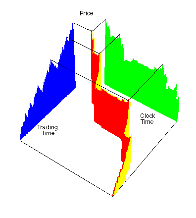

| This picture illustrates the conversion process in a single 3-dimensional graph. |
| (We use a simple Price-Clock Time graph for clarity.) |
| Note how the Clock Time-Trading Time curve compresses the flat regions and expands the steep regions of the Price-Clock Time graph. |
| Thus the long tails of the Price-Clock Time graph are absorbed into the multifractal time measure. |
| In addition, the dependence of increments is uniformized to fractional Brownian motion in the Price-Trading Time graph. |
| That is, the conversion to Trading Time decomposes long tails and dependent increments into different aspects of the graph. |
| This diagram was designed by the Math 190 class in the autumn, 1998 semester. Energetic discussions with the class transformed our original unclear representation into this. |
| Originally, the Scientific American editors decided to use this picture for the cover of the February, 1999, issue, advertising the article "A Fractal Walk Down Wall Street." Instead, they selected this. |
|  |
| But what about other applications? |
| Could biological data, from cardiac arrhythmias to the spread of epidemics, be better understood through conversion to the equivalent of Trading Time? |
| Almost all complicated systems exhibit irregular time behavior. |
| Perhaps rescaling in multifractal time will provide important new insights. |
Return to Trading Time.